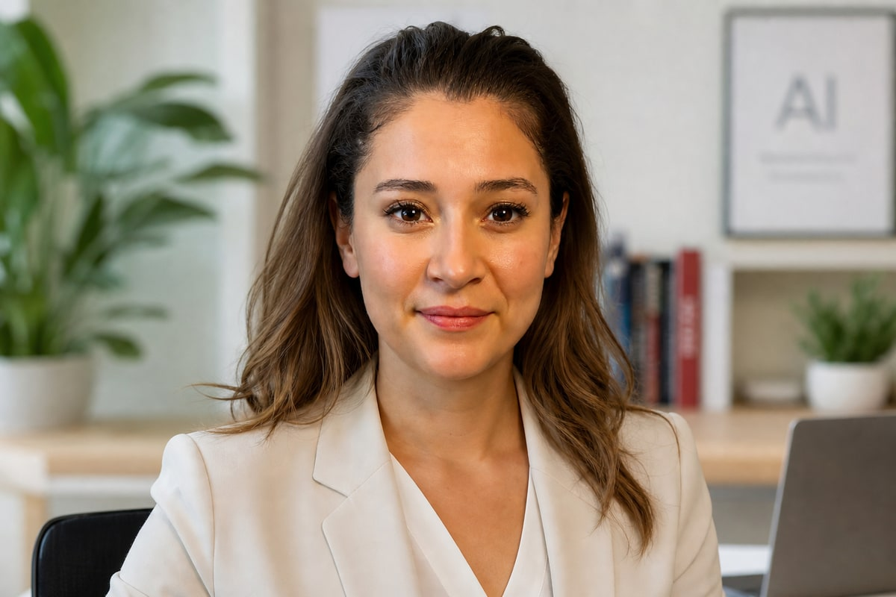

Nurdan
Grafik tasarımdan yapay zeka görünürlüğüne — dijital görünürlük sistemleri kurgulamanın arkasındaki perspektif.

Grafik tasarımdan yapay zeka çağının dijital görünürlüğüne.
Dijital dünyaya sosyal medya, grafik tasarım ve içerik üretimiyle başladım. Zaman içinde markaların sadece güzel görünmesinin değil; doğru yerde, doğru şekilde ve doğru mesajla görünür olmasının daha önemli olduğunu fark ettim.
Sosyal medya evolüsyonundan başlayıp, SEO ve arama motorlarının önem kazandığı dönemde derinleştim. Yapay zeka sistemlerinin arama davranışlarını yeniden tanımladığı bu dönemde, markaların sadece sosyal medyada değil; ChatGPT'de, Google'da, AI cevaplarında ve tüm dijital kanallarda görünür olması NURDAI'ın odak noktası oldu.
Yüzlerce markaya sosyal medya yönetimi, grafik tasarım, SEO stratejisi ve içerik üretimi süreçlerinde yer aldım. Her proje, bir markanın dijital dilini yapılandırmanın bir parçasıdır. Bu deneyim ve birikim, bugün NURDAI'ın dijital görünürlük sistemlerinin temelini oluşturuyor.
Başlangıç
Grafik tasarım ve sosyal medya yönetimi ile kariyerime başladım. İlk markalar için logo ve branding çalışmaları yaptım.
50+ projeDerinleşme
Dijital pazarlama ve SEO konularında uzmanlaşmaya başladım. İçerik stratejisi ve sosyal medya yönetiminde derinleştim.
100+ markaStrateji
SEO ve dijital strateji hizmetleri ile markaların dijital çağda görünür olmasını sağladım.
AI Visibility ✦
Yapay zeka sistemlerinin pazarlamayı yeniden şekillendirdiği bu dönemde, yapay zeka görünürlüğü ve GEO alanına odaklandım. NURDAI, yapay zeka görünürlüğü, SEO & GEO ve dijital strateji hizmetleriyle markaların yeni nesil keşif kanallarında konumlanmasını yapılandırıyor.
AI Visibility uzmanıUzmanlık Alanları
Medyada
Müşterilerden
"[Müşteri yorumu buraya gelecek.]"
"[Müşteri yorumu buraya gelecek.]"
İsimler müşteri onayı ile paylaşılmaktadır.
Markanızın görünürlük potansiyelini konuşalım.
Yapay zeka görünürlüğü ve dijital strateji için iletişime geçin.
İletişime Geç